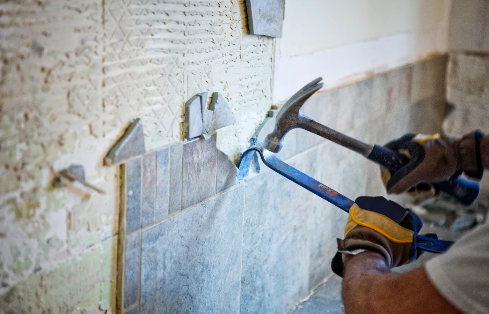

Rénover ou créer une salle de bains est l'un des projets les plus complexes de la maison. Plomberie, carrelage, électricité, menuiserie... la coordination entre les différents corps de métier est souvent source de stress, de dépassements de budget et de délais non tenus. La solution salle de bains clés en main proposée par JOFAGIST répond exactement à ce défi : un seul interlocuteur, un seul devis, une livraison dans les délais. Découvrez comment nous procédons.

Pourquoi opter pour une salle de bains clés en main ?
La rénovation d'une salle de bains implique l'intervention de plusieurs corps de métier : le plombier pour les tuyauteries, le carreleur pour les revêtements, l'électricien pour le câblage, le menuisier pour le meuble vasque ou le miroir, et parfois le peintre pour les finitions. Gérer soi-même cette coordination, c'est :
- Jongler avec plusieurs devis et des disponibilités différentes
- Assumer le risque de malfaçons à l'interface entre les intervenants
- Supporter les retards en cascade quand un artisan prend du retard
- Avoir plusieurs interlocuteurs différents en cas de problème
La formule clés en main de JOFAGIST élimine toutes ces contraintes. Vous nous confiez votre projet de A à Z, et nous vous livrons une salle de bains prête à utiliser, dans les délais et le budget convenus.
Les 5 étapes de votre projet salle de bains avec JOFAGIST
Étape 1 : La visite technique et le diagnostic
Tout commence par une visite gratuite à votre domicile. Un technicien JOFAGIST se déplace pour :
- Évaluer l'état de l'existant (tuyauteries, revêtements, électricité)
- Prendre les côtes précises de la pièce
- Analyser les contraintes techniques (emplacement des évacuations, passages de gaines, ventilation)
- Écouter vos souhaits, votre style, vos contraintes de budget
Cette première rencontre est capitale : c'est elle qui conditionne la qualité du projet et du devis.
Étape 2 : La proposition et le devis
Dans la semaine qui suit la visite, vous recevez un plan 2D de votre future salle de bains, une sélection de carrelages et d'équipements correspondant à vos goûts et votre budget, et un devis détaillé par poste (démolition, plomberie, électricité, carrelage, équipements, finitions).
Notre devis est fixe : le prix inscrit est celui que vous payez, sans avenant en cours de chantier sauf modification de votre part. C'est notre engagement.
Étape 3 : La dépose et la préparation du chantier
Une fois le devis accepté, nos équipes interviennent pour déposer l'existant : faïences, receveur de douche, baignoire, appareil sanitaire, meuble. Cette phase est réalisée avec soin pour ne pas endommager les zones non concernées par les travaux.
Les revêtements de sol et mural existants sont retirés jusqu'au béton ou à la maçonnerie. Les tuyauteries existantes sont inspectées et remplacées si nécessaire.
Étape 4 : Les travaux et la coordination de tous les corps de métier
C'est le coeur du projet. JOFAGIST coordonne l'ensemble des interventions dans l'ordre logique :
- Plomberie : déplacement ou adaptation des arrivées d'eau et des évacuations selon le nouveau plan
- Électricité : mise aux normes NFC 15-100 (zones IP, différentiels, VMC)
- Imperméabilisation : application du système d'étanchéité sous carrelage (SPEC) pour les zones humides
- Carrelage : pose sol et mural selon le plan validé, avec joints de dilatation et silicone
- Équipements sanitaires : installation de la douche, du bac, de la robinetterie, du WC suspendu et du meuble vasque
- Finitions : plinthe, enduit, peinture, accessoires
Étape 5 : La réception et la livraison
À la fin des travaux, vous effectuez une visite de réception avec notre technicien. Chaque poste est contrôlé : étanchéité, fonctionnement de la robinetterie, alignement des carrelages, propreté. Si vous identifiez des réserves, elles sont levées avant la livraison définitive.
Vous récupérez les notices des équipements, les certificats de garantie et les coordonnées du SAV. Votre nouvelle salle de bains vous appartient !
Quels équipements pour votre nouvelle salle de bains ?
JOFAGIST vous accompagne dans le choix de vos équipements. Voici les tendances actuelles que nous réalisons fréquemment :
- La douche à l'italienne : intemporelle et accessible, avec receveur ultra-plat ou sol à la française
- Le WC suspendu : facilite l'entretien et apporte une touche moderne
- La vasque à poser : tendance déco forte, disponible en céramique, résine ou béton
- Le meuble suspendu : optimise l'espace et facilite le nettoyage du sol
- Le sèche-serviettes à eau chaude : plus économique qu'un modèle électrique pour un chauffage régulier
Prêt à transformer votre salle de bains ?
Demandez une visite gratuite. Nous vous proposerons un projet sur-mesure adapté à votre espace et votre budget.
Budget : combien coûte une salle de bains clés en main ?
Le coût d'une salle de bains rénovée clés en main varie en fonction de la surface, de la qualité des équipements choisis et des contraintes techniques (déplacement d'évacuations, mise aux normes électrique, etc.). À titre indicatif :
- Petit budget / rénovation partielle : à partir de 3 000 à 5 000 € (remplacement de la robinetterie, carrelage partiel, nouveaux sanitaires)
- Rénovation complète standard : entre 6 000 et 12 000 € pour une salle de bains de 4 à 6 m²
- Rénovation haut de gamme : à partir de 12 000 € avec des équipements premium et des matériaux nobles
Ces fourchettes sont données à titre indicatif. Le devis JOFAGIST est gratuit et sans engagement : c'est la seule façon d'obtenir un chiffrage précis adapté à votre projet.
JOFAGIST en Centre-Val-de-Loire : votre partenaire salle de bains
Basée en Centre-Val-de-Loire, l'équipe JOFAGIST intervient pour des projets de création et de rénovation de salles de bains dans toute la région. Notre double expertise, tuyauterie professionnelle et travaux résidentiels, nous permet d'aborder chaque projet avec une rigueur technique que peu d'artisans peuvent offrir.
Prêt à franchir le pas ? Contactez-nous pour organiser une visite gratuite chez vous.